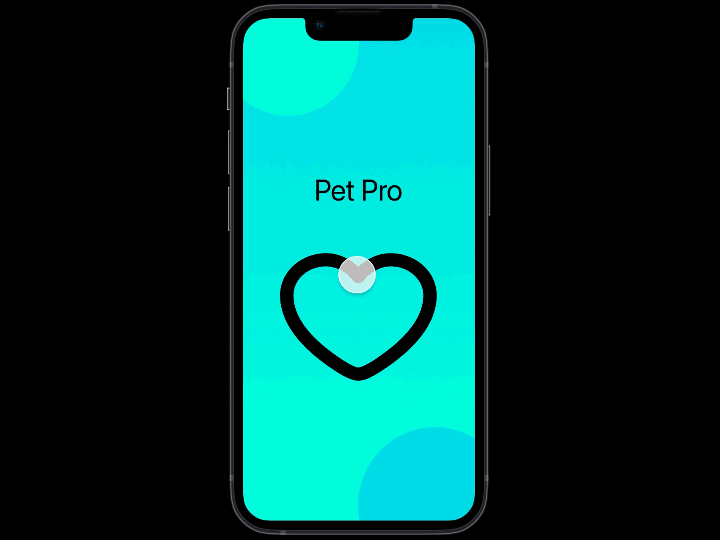

Medical record keeping app for Pet owners.
This app keeps your pets vaccination records, list of current medications, and other important vet records organized and accessable.

Responsibilities included: researching and evaluating user requirements, working alongside my team members to construct design ideas using storyboards, user flows and sitemaps. Designing graphic user interface elements, like menus, buttons and widgets.
Through the process of user research we found that our original idea needed to be modified in order to more directly address user needs. This case study documents the design process that yielded a prototype that was more tailored to user needs.
We are becoming more reliant on app based technology. Our research has identified that pet owners often rely on their vet’s office to provide updates and reminders, and some people do not keep track of their pet’s records at all. How we might improve pet owners' access to these records would be to create an app based platform where all medical records are stored and organized in one place. Allowing pet owners to view and update this information in cooperation with their vets offices will give owners more control over managing accuracy and the mobility of records in case of a relocation.